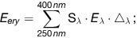
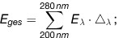

UVSV
Ausfertigungsdatum: 20.07.2011
Vollzitat:
"UV-Schutz-Verordnung vom 20. Juli 2011 (BGBl. I S. 1412)"
(+++ Textnachweis ab: 1.1.2012 +++)
(+++ Amtlicher Hinweis des Normgebers auf EG-Recht:
Umsetzung der
EGRL 123/2006 (CELEX Nr: 32006L0123)
Beachtung der
EGRL 34/98 (CELEX Nr: 31998L0034) +++)
|  |
|  |
| Hauttyp*) | I**) | II**) | III | IV | V | VI |
|---|---|---|---|---|---|---|
| Beschreibung | ||||||
| Natürliche Hautfarbe: | sehr hell | hell | hell bis hellbraun | hellbraun, oliv | dunkelbraun | dunkelbraun bis schwarz |
| Sommersprossen/ Sonnenbrandflecken: | sehr häufig | häufig | selten | keine | keine | keine |
| Natürliche Haarfarbe: | rötlich bis rötlich-blond | blond bis braun | dunkelblond bis braun | dunkelbraun | dunkelbraun bis schwarz | schwarz |
| Augenfarbe: | blau, grau | blau, grün, grau, braun | grau, braun | braun bis dunkelbraun | dunkelbraun | dunkelbraun |
| Reaktion auf die Sonne | ||||||
| Sonnenbrand: | immer und schmerzhaft | fast immer, schmerzhaft | selten bis mäßig | selten | sehr selten | extrem selten |
| Bräunung: | keine | kaum bis mäßig | fortschreitend | schnell und tief | keine | keine |
| Erythemwirksame Schwellenbestrahlung: | 200 Jm-2 | 250 Jm-2 | 350 Jm-2 | 450 Jm-2 | 800 Jm-2 | > 1 000 Jm-2 |
| 1 | Welchen Farbton weist Ihre unbestrahlte Haut auf? | ||
| Rötlich | 1 | ||
| Weißlich | 2 | ||
| Leicht beige | 3 | ||
| Bräunlich | 4 | ||
| 2 | Hat Ihre Haut Sommersprossen? | ||
| Ja, viele | 1 | ||
| Ja, einige | 2 | ||
| Ja, aber nur vereinzelt | 3 | ||
| Nein | 4 | ||
| 3 | Wie reagiert Ihre Gesichtshaut auf die Sonne? | ||
| Sehr empfindlich, meist Hautspannen | 1 | ||
| Empfindlich, teilweise Hautspannen | 2 | ||
| Normal empfindlich, nur selten Hautspannen | 3 | ||
| Unempfindlich, ohne Hautspannen | 4 | ||
| 4 | Wie lange können Sie sich im Frühsommer in Deutschland am Mittag bei wolkenlosem Himmel in der Sonne aufhalten, ohne einen Sonnenbrand zu bekommen? | ||
| Weniger als 15 Minuten | 1 | ||
| Zwischen 15 und 25 Minuten | 2 | ||
| Zwischen 25 und 40 Minuten | 3 | ||
| Länger als 40 Minuten | 4 | ||
| 5 | Wie reagiert Ihre Haut auf ein längeres Sonnenbad? | ||
| Stets mit einem Sonnenbrand | 1 | ||
| Meist mit einem Sonnenbrand | 2 | ||
| Oftmals mit einem Sonnenbrand | 3 | ||
| Selten oder nie mit einem Sonnenbrand | 4 | ||
| 6 | Wie wirkt sich bei Ihnen ein Sonnenbrand aus? | ||
| Kräftige Rötung, teilweise schmerzhaft und Bläschenbildung, danach Schälen der Haut | 1 | ||
| Deutliche Rötung, danach Schälen der Haut | 2 | ||
| Rötung, danach manchmal Schälen der Haut | 3 | ||
| Selten oder nie Rötung und Schälen der Haut | 4 | ||
| 7 | Ist bei Ihnen nach einmaligem längerem Sonnenbad anschließend ein Bräunungseffekt zu erkennen? | ||
| Nie | 1 | ||
| Meist nicht | 2 | ||
| Oftmals | 3 | ||
| Meist | 4 | ||
| 8 | Wie entwickelt sich bei Ihnen die Hautbräunung nach wiederholtem Sonnenbad? | ||
| Kaum oder gar keine Bräunung | 1 | ||
| Leichte Bräunung nach mehreren Sonnenbädern | 2 | ||
| Fortschreitende, deutlicher werdende Bräunung | 3 | ||
| Schnell einsetzende und tiefe Bräunung | 4 | ||
| 9 | Welche Angabe entspricht am ehesten Ihrer natürlichen Haarfarbe? | ||
| Rot bis rötlich blond | 1 | ||
| Hellblond bis blond | 2 | ||
| Dunkelblond bis braun | 3 | ||
| Dunkelbraun bis schwarz | 4 | ||
| 10 | Welche Farbe haben Ihre Augen? | ||
| Hellblau, hellgrau oder hellgrün | 1 | ||
| Blau, grau oder grün | 2 | ||
| Hellbraun oder dunkelgrau | 3 | ||
| Dunkelbraun | 4 | ||
| Summe (∑) | |||
| Geschätzter Hauttyp | |||
| Wellenlänge λ in nm | Wichtungsfaktor Sλ |
|---|---|
| λ < 298 | 1 |
| 298 ≤ λ ≤ 328 | 100,094 (298 – λ) |
| 328 < λ ≤ 400 | 100,015 (140 – λ) |
| Erythemwirksame Bestrahlung in Jm-2 | Höchstbestrahlungsdauer in Minuten | |
|---|---|---|
| Erste Bestrahlung ungebräunter Haut | 100 | |
| Bestrahlungsstufe im Dosierungsplan | 150 | |
| Bestrahlungsstufe im Dosierungsplan | 200 | |
| Bestrahlungsstufe im Dosierungsplan | 250 | |
| Bestrahlungsstufe im Dosierungsplan | 300 | |
| Bestrahlungsstufe im Dosierungsplan | 350 | |
| Bestrahlungsstufe im Dosierungsplan | 400 | |
| Bestrahlungsstufe im Dosierungsplan | 450 | |
| Bestrahlungsstufe im Dosierungsplan | 500 | |
| Bestrahlungsstufe im Dosierungsplan | 550 | |
| Bestrahlungsstufe im Dosierungsplan | 600 | |
| Zwangsabschaltung | 800 |
| Notabschaltung nach § 3 Absatz 2 Nummer 3 UVSV ist vorhanden | □ ja | □ nein |
| Geräteaufschriften nach § 7 Absatz 2 UVSV sind vorhanden | □ ja | □ nein |
| Hinweise nach § 7 Absatz 1 UVSV sind vorhanden | □ ja | □ nein |
| Schutzbrillen nach § 3 Absatz 2 UVSV sind vorhanden | □ ja | □ nein |
| Datum | Art der Reparatur |
|---|---|
| Zwangsabschaltung auf Funktion geprüft | □ ja | □ nein |
| Notabschaltung auf Funktion geprüft | □ ja | □ nein |
| Folgende Mängel sind zu beheben | Ausgewechselte Bauteile | Mängel behoben durch | Mängel behoben am |
|---|---|---|---|
| Das UV-Bestrahlungsgerät | □ ist zur weiteren Verwendung geeignet. |
| □ darf nicht in Betrieb genommen werden. |
| Optische Bauteile des UV-Bestrahlungsgerätes wurden gewechselt und geprüft | □ ja | □ nein |
| Optisches Bauteil | Ersetzt durch | Äquivalenzbescheinigung*) (ja/nein) | Datum | Name | Unterschrift |
|---|---|---|---|---|---|
| Hauttyp | Erythemwirksame Bestrahlung in Jm–2 | ||||
|---|---|---|---|---|---|
| Nummer der Bestrahlung in der Serie | |||||
| 1 | 2 und 3 | 4 und 5 | 6 bis 8 | 9 und 10 | |
| I*) | 100 | 100 | 100 | 100 | 100 |
| II*) | 100 | 100 | 100 | 100 | 100 |
| III | 100 | 150 | 200 | 250 | 350 |
| IV | 100 | 200 | 300 | 350 | 450 |
| V | 100 | 250 | 400 | 550 | 600 |
| VI | 100 | 300 | 500 | 600 | 600 |